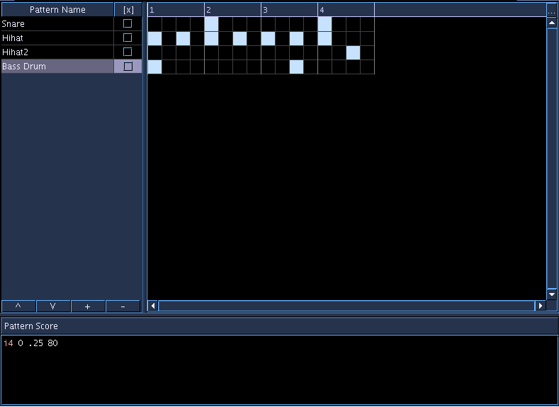

PatternObject
Accepts NoteProcessors: yes
Pattern Object

The PatternObject is pattern-based score editor, based on the author's previous project "Patterns". It is a flexible pattern-oriented score editor, useful for musical ideas which are pattern based, such as drum parts or minimalist-style musical ideas.
For the general workflow of using the PatternObject, users will liked likely want to:
-
Setup the PatternObject Properties (number of beats and subdivisions)
-
Add Patterns, giving each pattern a name to help identify what the pattern is for
-
Edit each Pattern's score
-
Visually edit the PatternObject score
The PatternObject's Time Properties can be modified by clicking on the button in the upper-right corner of the editor. Clicking the button will hide or show the properties panel on the right, as shown below: PatternObject - Properties PatternObject - Properties
To add Patterns to the PatternObject, use the "+" button on the bottom of the left hand section. Double-clicking the name of the pattern name will allow editing of the name, and clicking on the [x] box will allow for muting the Pattern. Clicking on the Pattern in the table will also bring up it's score in the area below.
The Pattern's score is standard Csound SCO text, with the same features supported as by the GenericScore SoundObject. Each score should be started from time zero. The Pattern's score should be set such that its score's total duration fits within the time of the subDivision. For example, if the properties set for the PatternObject's time values are 4 beats and 4 subdivisions, each beat is 1.0 in duration (corresponds to p3 value of a note) and thus a single subdivision in this case would be equivalent to .25. Scores shorter or longer than the subdivision length are allowed, but one should be aware that the resultant score may or may not longer than what is visually represented on the PatternObject score.
The PatternObject score is visually edited by click on squares which correspond to subdivisions of the beat. For example, if a Pattern's score is .25 in total duration, and the time value of the PatternObject is set to 4 and 4, then clicking a square would be to insert a 16th note in a score.
To add to the PatternObject score, simply click on the square where one wishes to have a Pattern triggered. To remove, simply click on a selected square. The user can also click and drag to add or remove mutliple triggers.
-
Users may be surprised at the generated score if time behavior is not set to None(while others may prefer to use Scale, which is the default). Please be mindful of this, especially when using PatternObjects and the SoundObject library, where the default for creating instances of SoundObjects is to have Time Behavior of Scale on the Instance SoundObject.
-
When the PatternObject is used with a Scale time behavior, you may not get the results you think you will get if the pattern is not filled in in the last subdivision of the beat. When Blue goes to generate a score for a soundObject, with a scale time behavior, the score is first generated, then scaled to the duration of the soundObject. So, if you're pattern has empty subdivisions and you're expecting there to be a space at the end of your pattern, when you go to generate the CSD, the space won't be there.
To get around this, you may want to use a time behavior of None, or you may want put in a "ghost note" in a Pattern layer, using a note like:
``` i 10000 0 .25
```
Where 10000 is not an instrument in use in your project. Then you can put in a trigger for this pattern in the last subdivision. What will happen is that Blue will process the score with this note's time and thus will generate with this out to the CSD, but Csound will ignore the note.
When the PatternObject is set to use a time behavior of Repeat, the same situation can occur as when using Scale if a Repeat Point is not set, as the default for Repeat when no repeat point is set is to take the generated score and repeat it after the duration of the last note. To prevent this, either use the ghost note technique above or set a repeat point.